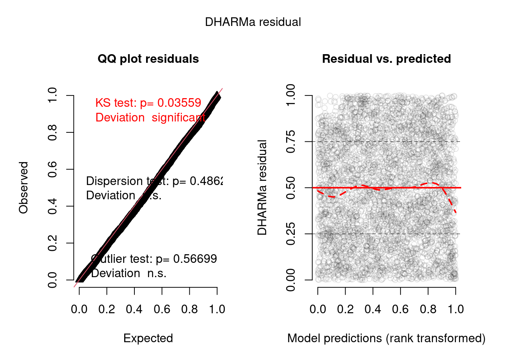
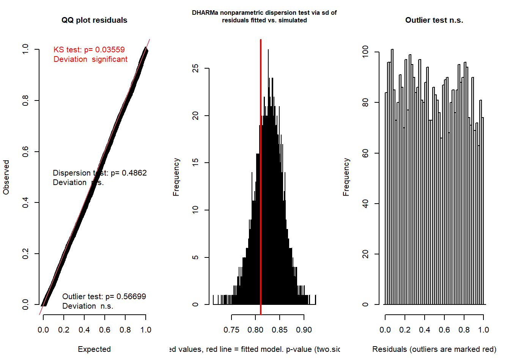
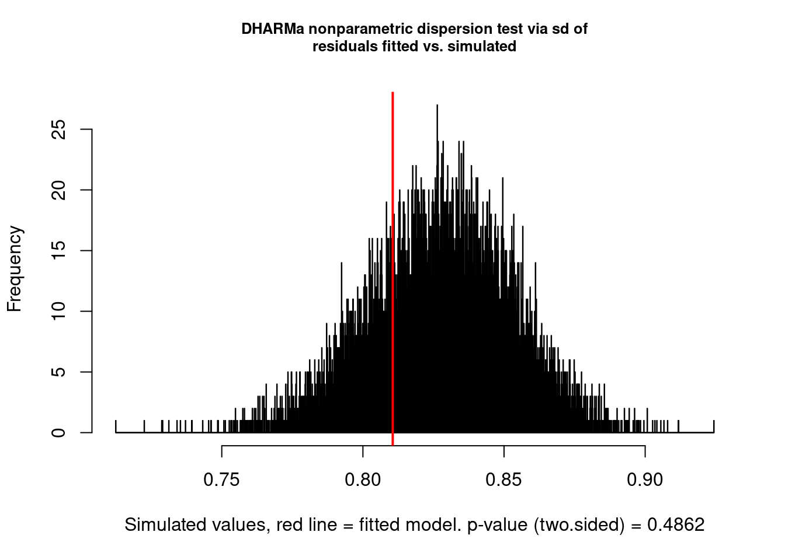
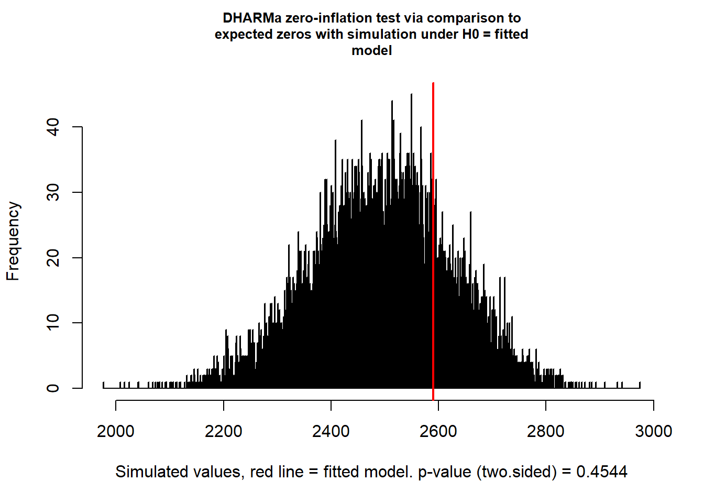

6. Lösung
Modellgüte und -diagnostics MM / Habitatselektionsmodell
Libraries laden
Neue packages die wir für die Modelle und die Diagnostics brauchen
# neue Packages: DHARMa, car, MASS, ROCR, sjPlot, sjstats,
# ggeffects, cowplot, gstat
ipak <- function(pkg) {
new.pkg <- pkg[!(pkg %in% installed.packages()[, "Package"])]
if (length(new.pkg))
install.packages(new.pkg, repos = "http://cran.us.r-project.org",
dependencies = TRUE)
sapply(pkg, require, character.only = TRUE)
}
packages <- c("lme4", "bbmle", "MuMIn", "tidyverse", "DHARMa",
"car", "MASS", "ROCR", "sjPlot", "ggeffects", "sjstats",
"cowplot", "magrittr", "gstat")
ipak(packages)Ausgangslage
- Der Modellfit von letzter Woche als Ausgangspunkt für die heutige Übung
DF_mod_day <- read_delim(here("data", "Aufgabe4_Datensatz_Habitatnutzung_Modelle_20211101_moodle.csv"),
delim = ";") %>%
filter(time_of_day == "day") %>%
mutate(slope_scaled = scale(slope), us_scaled = scale(us),
os_scaled = scale(os), forest_prop_scaled = scale(forest_prop),
dist_road_all_scaled = scale(dist_road_all), dist_road_only_scaled = scale(dist_road_only),
dist_build_scaled = scale(dist_build), id = as.factor(id))
f <- pres_abs ~ slope_scaled + us_scaled + os_scaled + forest_prop_scaled +
dist_road_only_scaled + dist_build_scaled
f <- paste(c(f, "+ (1 | id)"), collapse = " ") %>%
as.formula()
m_day <- glmer(f, data = DF_mod_day, family = binomial, na.action = "na.fail")
all_m <- dredge(m_day)
avgmodel <- model.avg(all_m, rank = "AICc", subset = delta <
2)
summary(avgmodel)- Die Modellresultate aus dem avgmodel sind grundätzlich die finalen Resultate die bereits interpretiert werden könnten. Allerdings funktionieren die Diagnosetests und die Darstellung der Resultate mit diesem gemittelten Modell nicht sehr gut, weshalb wir einen re-fit mit glmer machen müssen (an den Resultaten ändert sich dadurch nichts)
f_pres_abs <- pres_abs ~ dist_build_scaled + dist_road_only_scaled +
forest_prop_scaled + slope_scaled + us_scaled + os_scaled +
(1 | id)
m_day <- glmer(f_pres_abs, data = DF_mod_day, family = binomial,
na.action = "na.fail")
# hier noch zum Vergleich, dass die Resulate sich nur
# marginal verändern
summary(avgmodel)
summary(m_day)
# https://stats.stackexchange.com/questions/153611/interpreting-random-effect-variance-in-glmer
# 95% range of the roe deer effects is approximately: -0.97
# - 0.97Aufgabe 1
Berechung der AUC (area under the receiver operating characteristic curve)= Mass der Modellgüte
Für die Berechnung des AUC findet ihr weiterführende Informationen unter: Link
prob <- predict(m_day, type = c("response"))
pred <- prediction(prob, DF_mod_day$pres_abs)
# AUC
auc <- performance(pred, measure = "auc")@y.values[[1]]
auc[1] 0.7769194Aufgabe 2
Interpretieren der Modell-Residuen mittels Tests auf verschiedene Aspekte
- Model testing for over/underdispersion, zeroinflation and spatial autocorrelation following the DHARMa package.
- unbedingt die Vignette des DHARMa-Package konsultieren: Link
# Residuals werden über eine Simulation auf eine
# Standard-Skala transformiert und können anschliessend
# getestet werden. Dabei kann die Anzahl Simulationen
# eingestellt werden (dauert je nach dem sehr lange)
simulationOutput <- simulateResiduals(fittedModel = m_day, n = 10000)
# plotting and testing scaled residuals
plot(simulationOutput)
testResiduals(simulationOutput)
$uniformity
Asymptotic one-sample Kolmogorov-Smirnov test
data: simulationOutput$scaledResiduals
D = 0.02194, p-value = 0.03559
alternative hypothesis: two-sided
$dispersion
DHARMa nonparametric dispersion test via sd of residuals fitted vs.
simulated
data: simulationOutput
dispersion = 0.9797, p-value = 0.4862
alternative hypothesis: two.sided
$outliers
DHARMa outlier test based on exact binomial test with approximate
expectations
data: simulationOutput
outliers at both margin(s) = 1, observations = 4185, p-value = 0.567
alternative hypothesis: true probability of success is not equal to 0.00019998
95 percent confidence interval:
6.049637e-06 1.330610e-03
sample estimates:
frequency of outliers (expected: 0.0001999800019998 )
0.0002389486 $uniformity
Asymptotic one-sample Kolmogorov-Smirnov test
data: simulationOutput$scaledResiduals
D = 0.02194, p-value = 0.03559
alternative hypothesis: two-sided
$dispersion
DHARMa nonparametric dispersion test via sd of residuals fitted vs.
simulated
data: simulationOutput
dispersion = 0.9797, p-value = 0.4862
alternative hypothesis: two.sided
$outliers
DHARMa outlier test based on exact binomial test with approximate
expectations
data: simulationOutput
outliers at both margin(s) = 1, observations = 4185, p-value = 0.567
alternative hypothesis: true probability of success is not equal to 0.00019998
95 percent confidence interval:
6.049637e-06 1.330610e-03
sample estimates:
frequency of outliers (expected: 0.0001999800019998 )
0.0002389486 # The most common concern for GLMMs is overdispersion,
# underdispersion and zero-inflation.
# separate test for dispersion
testDispersion(simulationOutput)
DHARMa nonparametric dispersion test via sd of residuals fitted vs.
simulated
data: simulationOutput
dispersion = 0.9797, p-value = 0.4862
alternative hypothesis: two.sided# test for Zeroinflation
testZeroInflation(simulationOutput)
DHARMa zero-inflation test via comparison to expected zeros with
simulation under H0 = fitted model
data: simulationOutput
ratioObsSim = 1.0388, p-value = 0.4544
alternative hypothesis: two.sided# test for spatial Autocorrelation
# calculating x, y positions per group
groupLocations = aggregate(DF_mod_day[, 3:4], list(DF_mod_day$x,
DF_mod_day$y), mean)
groupLocations$group <- paste(groupLocations$Group.1, groupLocations$Group.2)
# calculating residuals per group
res2 = recalculateResiduals(simulationOutput, group = groupLocations$group)
# running the spatial test on grouped residuals
testSpatialAutocorrelation(res2, groupLocations$x, groupLocations$y,
plot = F)
DHARMa Moran's I test for distance-based autocorrelation
data: res2
observed = 0.0149472, expected = -0.0002661, sd = 0.0010081, p-value <
2.2e-16
alternative hypothesis: Distance-based autocorrelation# Testen auf Multicollinearität (dh zu starke Korrelationen
# im finalen Modell, zB falls auf Grund der ökologischen
# Plausibilität stark korrelierte Variablen im Modell) use
# VIF values: if values less then 5 is ok (sometimes > 10),
# if mean of VIF values not substantially greater than 1
# (say 5), no need to worry.
car::vif(m_day) dist_build_scaled dist_road_only_scaled forest_prop_scaled
1.508604 1.129679 2.542465
slope_scaled us_scaled os_scaled
1.500129 1.219237 2.455742 mean(car::vif(m_day))[1] 1.725976Aufgabe 4
Ermittlung des individuellen Beitrags der einzelen Variablen im Gesamtmodell
- Bestimmen delta AIC nach Coppes et al. 2017 -> Vergleich des Gesamtmodells gegenüber einem Modell ohne die entsprechende Variable.
- Auftrag auf den 22.11.2021: Jede Gruppe kurze Vorstellung der Modellresultate & Diagnostics im Plenum und Diskussion der Ergebnisse (keine PP-Präsentation nötig)
m_os <- glmer(pres_abs ~ dist_build_scaled + dist_road_only_scaled +
forest_prop_scaled + slope_scaled + us_scaled + (1 | id),
data = DF_mod_day, family = binomial, na.action = "na.fail")
m_us <- glmer(pres_abs ~ dist_build_scaled + dist_road_only_scaled +
forest_prop_scaled + slope_scaled + os_scaled + (1 | id),
data = DF_mod_day, family = binomial, na.action = "na.fail")
m_road <- glmer(pres_abs ~ dist_build_scaled + forest_prop_scaled +
slope_scaled + us_scaled + os_scaled + (1 | id), data = DF_mod_day,
family = binomial, na.action = "na.fail")
m_forest <- glmer(pres_abs ~ dist_build_scaled + dist_road_only_scaled +
slope_scaled + us_scaled + os_scaled + (1 | id), data = DF_mod_day,
family = binomial, na.action = "na.fail")
m_build <- glmer(pres_abs ~ dist_build_scaled + dist_road_only_scaled +
forest_prop_scaled + slope_scaled + us_scaled + os_scaled +
(1 | id), data = DF_mod_day, family = binomial, na.action = "na.fail")
m_slope <- glmer(pres_abs ~ dist_build_scaled + dist_road_only_scaled +
forest_prop_scaled + us_scaled + os_scaled + (1 | id), data = DF_mod_day,
family = binomial, na.action = "na.fail")
bbmle::AICtab(m_day, m_os, m_us, m_road, m_forest, m_build, m_slope) dAIC df
m_os 0.0 7
m_day 0.9 8
m_build 0.9 8
m_slope 7.3 7
m_us 92.2 7
m_road 94.3 7
m_forest 141.9 7